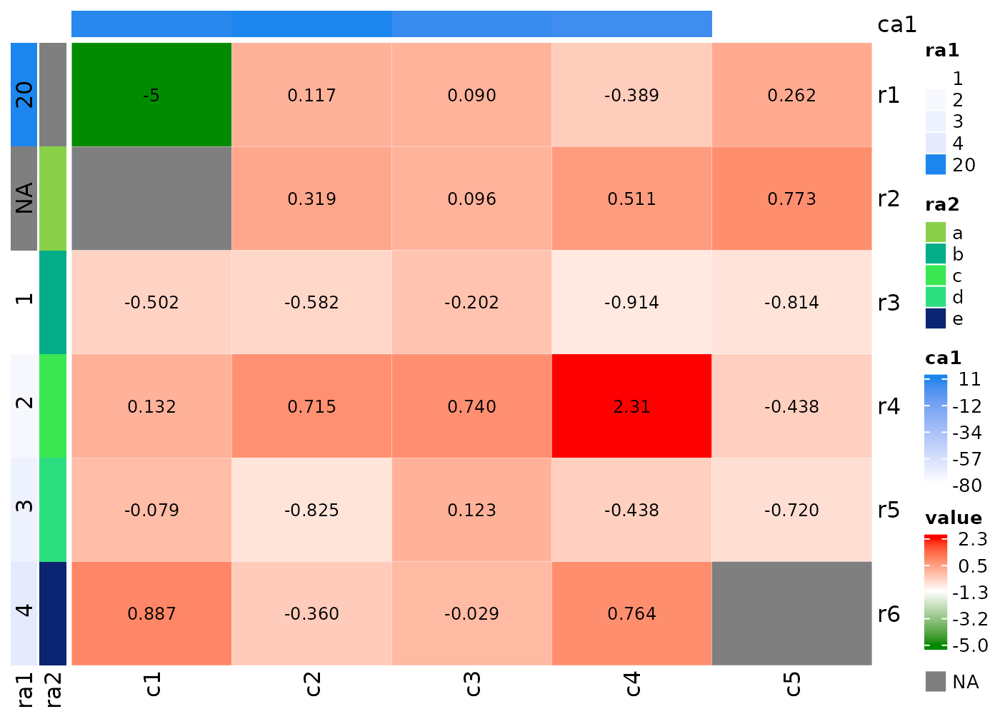
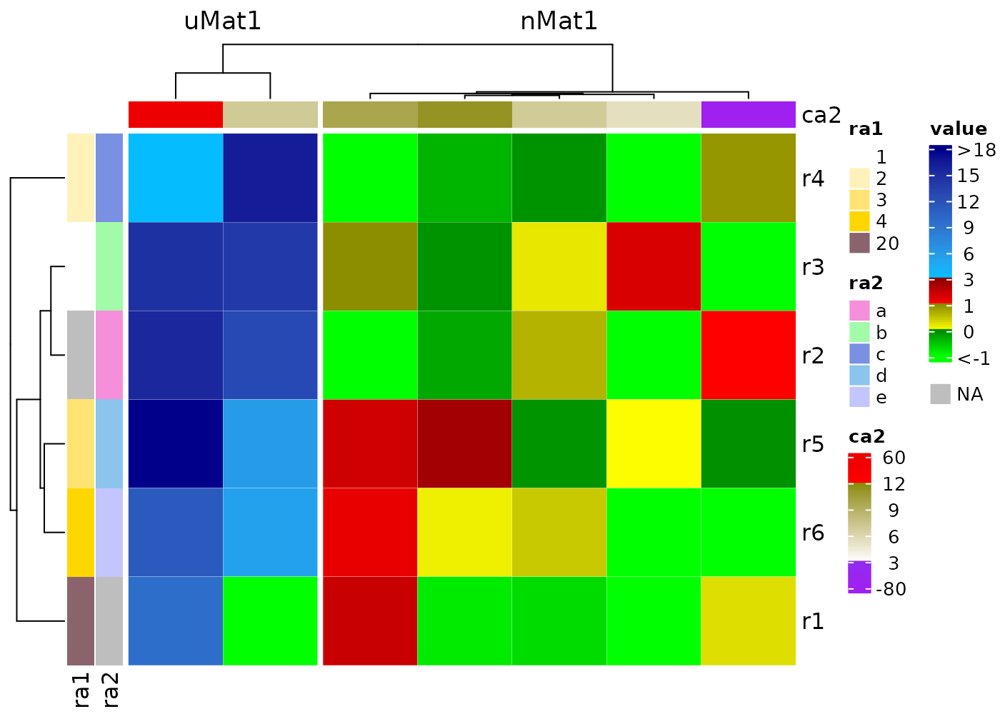
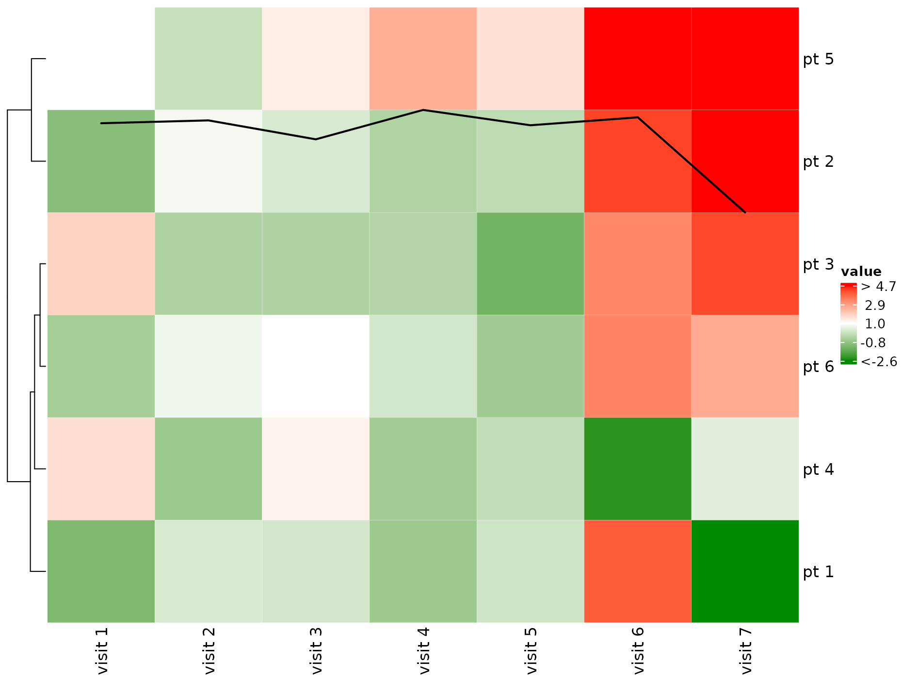

Introduction
cHeatmap is a wrapper of the excellent ComplexHeatmap::Heatmap()
function with additional functions and more friendly interface for some
common tasks in my work, thus called the convenience
Heatmap. I highly recommend reading the ComplexHeatmap
book for more advanced use.
Here are the features:
Automatic or manual exclusion of outliers in the color mapping so that the color scale of the heatmap and annotations is not dominated by outliers.
The option to set the color-value mappings for the body and annotations of heatmaps.
Automatic coloring of the dendrogram.
Easy highlight or display of the values of certain cells in the body and annotations of the heatmap.
Discrete color-value mapping for integer matrices containing few unique values.
Interface to plot across rows.
-
Handling of edge cases:
Infand-Infvalues in input matrix cause errors instats::dist()for clustering, they are reset as NA.If missing values are present in the input matrix or row and column annotations, a legend for missing value is added.
Plot a heatmap of a data.frame with columns of different data types clustered by one of the columns.
Examples
Exclusion of outliers in the color mapping
Outliers in a numeric matrix dominate the color scale and make the
differences among many cells barely visible, such as body and
ra1 annotation below.
library(cHeatmap)
set.seed(100)
nMat1 <- rnorm(27)
mat1 <- matrix(c(-5,-Inf,nMat1,Inf), nrow = 6)
rownames(mat1)=paste0('r',1:nrow(mat1))
colnames(mat1)=paste0('c',1:ncol(mat1))
raDf=data.frame(ra1=c(20,Inf,1:4),ra2=c(NA,letters[1:5]))
rownames(raDf)=rownames(mat1)
caDf=data.frame(ca1=c(9.8,11.3,6.9,5.4,-80))
rownames(caDf)=colnames(mat1)
cHeatmap(
mat1,
NA.color = 'grey50',
name = "value", # title of the legend for heatmap body
rmLegendOutliers = F, # keep outliers in the legends
cluster_rows = F, cluster_columns = F, # no clustering
cellFun = function(x) { x }, # display all the values in the body of the heatmap
rowAnnoDf = raDf, # add row annotation
colmAnnoDf = caDf, # add row annotation
annoCellFunList = list(ra1=\(x) {1:nrow(raDf)}) # display all values of ra1 annotation
)
Set rmLegendOutliers = T, default for numerical vectors,
to remove outliers in the color-value mapping of the legends, so that
the difference in the body and annotation can be easily visualized. See
Reference
Manual for details. Note that the affected labels of the legends now
prefixed with > or <, unless
mat1 is a discrete integer vector like ra1,
i.e. the number of unique items is less than
intAsDiscreteCutoff.
cHeatmap(
mat1,
name = "value",
rmLegendOutliers = T, # remove outliers in the legends
cluster_rows = F, cluster_columns = F,
cellFun = function(x) { x },
rowAnnoDf = raDf,
colmAnnoDf = caDf,
annoCellFunList = list(ra1=\(x) {1:nrow(raDf)},
ca1=\(x) {1:nrow(caDf)})
)
Manually set the color-value mapping
Instead of auto-detecting the outliers, use the colMap
to set the range. Values outside of the range are treated as
outliers.
cHeatmap(
mat1,
name = "value",
# manually set the color mapping for the heatmap body, here only the numeric
# values are set since the default colors are green, white, and red.
# one can also set only the upper or low bound, e.g. colMap = c(NA, 0, 1)
colMap = c(-1, 0, 1),
rmLegendOutliers = T, # remove outliers in the legends
cluster_rows = F, cluster_columns = F,
colmAnnoDf = caDf,
# manually set the color mapping for the ra1
colmAnnoColMap = list(ca1=c('white'=0,'gold'=12))
)
Set multi-color mapping to visualize local clusters or outliers
# create an Inf value
nMat1 <- rnorm(30)
uMat1 <- runif(12, -5, 20)
mat2 <- matrix(c(nMat1, uMat1), nrow = 6)
rownames(mat2)=paste0('r',1:nrow(mat1))
caDf2=data.frame(ca2=c(9.8,11.3,6.9,5.4,-80, 7, 60))
rownames(caDf2)=colnames(mat2)
bCm=c("green4" = -1, "white" = 0, "red" = 1, #cluster 1
"yellow" = 3, "blue" = 18) #cluster 2
caCm = c('purple'=-80,'white'=0,'yellow4'=12, 'red'=60)
cHeatmap(mat2,
name = "value",
rmLegendOutliers = F,
colMap = bCm,
column_split = c(rep("nMat1", 5), rep("uMat1", 2)),
rowAnnoDf = raDf,
# manually set the color mapping for the ra1
rowAnnoColMap = list(ra1=c('white'=1,'gold'=4,'pink4'=20)),
colmAnnoDf = caDf2,
colmAnnoColMap = list(ca2=caCm)
)
Set distinct color to different numerical ranges by adding a
| between the names of two colors, e.g. the
bCm and caCm below. And adjust the legend
to
- lengthen the portion for cluster 1
- shorten the portion between 1 and 3 if majority of cluster 2 are in (3, 18)
- increase the height of the whole legend to 4cm
bAt=c(-1,0,1,3,6,9,12,15,18)
bCm=c(green = -1,
'green4|yellow' = 0,
'yellow4|red'=1,
'red4|deepskyblue' = 3,
blue4 = 18)
caCm= c('purple'=-80,'purple2|white'=3,'yellow4|red'=12, 'red2'=60)
caAt=c(-80,3,6,9,12,60)
cHeatmap(mat2,
name = "value",
rmLegendOutliers = F,
#set color mapping with distinct regions
colMap = bCm,
column_split = c(rep("nMat1", 5), rep("uMat1", 2)),
legendTicks = bAt,
legendBreakDist = rep.int(1,length(bAt)-1),
legendHeight = 4,
rowAnnoDf = raDf,
rowAnnoColMap = list(ra1=c('white'=1,'gold'=4,'pink4'=20)),
colmAnnoDf = caDf2,
colmAnnoColMap = list(ca2=caCm),
colmAnnoPara = list(annotation_legend_param=list(
ca2=list(at=caAt,break_dist=rep.int(1,length(caAt)-1))
))
)
Display cell values using cellFun and
annoCellFun
Show only values in (0.5, 1) in the heatmap body and the
5th value in ra1 and value b in
ra2.
cHeatmap(
mat1,
name = "value",
cellFun = \(x) { if (is.finite(x) && x > 0.5 && x < 1) x },
rowAnnoDf = raDf,
annoCellFunList = list(ra1=\(x) {5},
ra2=\(x) {which(x=='b')})
)
Display only the outliers in the heatmap body and ra1.
cHeatmap(
mat1,
name = "value",
cellFun = 'o',
rowAnnoDf = raDf,
annoCellFunList = list(ra1=\(x) 'o')
)
Mark outliers as X;
cHeatmap(
mat1,
name = "value",
cellFun = c("o", "X"),
rowAnnoDf = raDf,
annoCellFunList = list(ra1=\(x) list('o','X'))
)
Color outliers by black edge.
Display H if cell values > 2 and L if
< 0.

Add black edge if cell values > 2 and display L if
< 0.
cHeatmap(mat1,
cellFun = function(x) {
if(is.finite(x)){
if(x > 2) list("rect", col = "black", lwd = 2) else if(x < 0) "L"
}
}
)
Color dendrograms and split the clusters
nRowCluster and nColmCluster specify the
number of colors in the corresponding dendrograms.
cHeatmap(mat1,
name = "value",
rmLegendOutliers = F,
nRowCluster = 2, nColmCluster = 3,
row_split = 2, column_split = 3
)Integer matrices
If the number of unique values is greater than
intAsDiscreteCutoff whose default value is 6 in
cHeatmap parameter settings, the color mapping is
continuous; otherwise, the mapping is discrete.
Set colors manually.
Concatenate two heatmaps
Set drawHeatmap = F to concatenate multiple
heatmaps.
nMat1 <- matrix(rnorm(30), nrow = 6)
uMat1 <- matrix(runif(12, -5, 20), nrow = 6)
hm1 <- cHeatmap(nMat1, drawHeatmap = F, name = "nMat1")
hm2 <- cHeatmap(uMat1, drawHeatmap = F, name = "uMat1")
hm1 + hm2
Plot inside each row using rowDraw
Here painScore of patient 2 is plotted
across visits. Its values are transformed to the range of (0,1),
representing relative values across visits.
mat1 <- matrix(c(nMat1, uMat1), nrow = 6)
rownames(mat1) <- paste("pt", 1:6)
colnames(mat1) <- paste("visit", 1:7)
painScore <- rnorm(7)
cHeatmap(mat1,
name = "value", cluster_columns = F,
rowDraw = list(
list("grid.lines", col = "black", lwd = 2),
matrix(painScore, nrow = 1), # data to be plotted
2 # plot at the 2nd row of mat1
)
)
Plot both lines and points in multiple rows.
# longitudinal scores of four patients
painScore <- matrix(rnorm(28), nrow = 4)
cHeatmap(mat1,
name = "value", cluster_columns = F,
rowDraw = list(
list(
list("grid.points", size = 0.5, pch = 15, col = "blue"),
list("grid.lines", col = "black", lwd = 2)
),
painScore,
c(2, 3, 4, 5) # row indices of the four patients in mat1
)
)